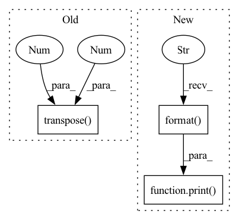

Pattern ID :15571

Before Change
if self.use_dtw_loss:
// print("Regular Loss: {}".format(loss))
dtw_loss = self.dtw_criterion(after_outs.transpose(0, 1), speech.transpose(0, 1)).mean() / 10.0 // division to balance orders of magnitude
// print("\n\n")
// import matplotlib.pyplot as plt
// import librosa.display as lbd
After Change
// lbd.specshow(after_outs[0].transpose(0,1).detach().cpu().numpy(), ax=ax[0], sr=16000, cmap="GnBu", y_axis="mel", x_axis="time", hop_length=256)
// lbd.specshow(speech[0].transpose(0,1).cpu().numpy(), ax=ax[1], sr=16000, cmap="GnBu", y_axis="mel", x_axis="time", hop_length=256)
// plt.show()
print("DTW Loss: {}".format(dtw_loss))
loss += dtw_loss
// calculate attention loss
if self.use_guided_attn_loss:
In pattern: SUPERPATTERN
Frequency: 3
Non-data size: 3
Instances
Fragment ID: 52614578
Project Name: digitalphonetics/ims-toucan
Commit Name: 968d557771c4bf424b97373ffd0651bf157455d0
Time: 2021-08-06
Author: florian.lux@ims.uni-stuttgart.de
File Name: TrainingInterfaces/Text_to_Spectrogram/Tacotron2/Tacotron2.py
M Class Name: Tacotron2
N Class Name: Tacotron2
M Method Name: forward(6)
N Method Name: forward(6)
M Parent Class: torch.nn.Module
N Parent Class: torch.nn.Module
M File Name: TrainingInterfaces/Text_to_Spectrogram/Tacotron2/Tacotron2.py
N File Name: TrainingInterfaces/Text_to_Spectrogram/Tacotron2/Tacotron2.py
M Start Line: 180
M End Line: 220
N Start Line: 180
N End Line: 228
'>
Before Change
interval = 16
idx = torch.arange(0,T,interval)
rpn_inputs = inputs[:,:,idx]
rpn_inputs = rpn_inputs.transpose(1,2).contiguous().view(N*(T//interval),C,H,W)
with torch.no_grad():
proposals = rpn(rpn_inputs)
proposals = proposals.view(N,T//interval,10,4)
After Change
rpn_inputs = inputs[:,:,sample].transpose(1,2).contiguous()
rpn_inputs = rpn_inputs.view(-1,C,H,W)
if len(inputs) < max_N:
print("Modified from {} to {}".format(len(inputs), max_N))
rpn_inputs = torch.cat((rpn_inputs, rpn_inputs[:(max_N-len(inputs))*(T//interval)]))
with torch.no_grad():
proposals = rpn(rpn_inputs)
proposals = proposals.view(-1,T//interval,10,4)
'>
Fragment ID: 52614579
Project Name: jd730/strg
Commit Name: 439d8eb70d35c5cc16fdabda09a67e2149af8c8a
Time: 2020-06-12
Author: jdhwang730@gmail.com
File Name: training.py
M Class Name: AnonimousClass
N Class Name: AnonimousClass
M Method Name: train_epoch(12)
N Method Name: train_epoch(12)
M Parent Class:
N Parent Class:
M File Name: training.py
N File Name: training.py
M Start Line: 57
M End Line: 62
N Start Line: 50
N End Line: 76
'>
Before Change
interval = 16
idx = torch.arange(0,T,interval)
rpn_inputs = inputs[:,:,idx]
rpn_inputs = rpn_inputs.transpose(1,2).contiguous().view(N*(T//interval),C,H,W)
print(rpn_inputs.shape)
with torch.no_grad():
proposals = rpn(rpn_inputs)
After Change
rpn_inputs = inputs[:,:,idx].transpose(1,2).contiguous()
rpn_inputs = rpn_inputs.view(-1,C,H,W)
if len(inputs) < max_N:
print("Modified from {} to {}".format(len(inputs), max_N))
rpn_inputs = torch.cat((rpn_inputs, rpn_inputs[:(max_N-len(inputs))*(T//interval)]))
with torch.no_grad():
proposals = rpn(rpn_inputs)
proposals = proposals.view(-1,T//interval,10,4)
'>
Fragment ID: 52614582
Project Name: jd730/strg
Commit Name: b98d2a6a9e626ae8be88646109eca0d53f1f4af5
Time: 2020-06-12
Author: jdhwang730@gmail.com
File Name: validation.py
M Class Name: AnonimousClass
N Class Name: AnonimousClass
M Method Name: val_epoch(9)
N Method Name: val_epoch(9)
M Parent Class:
N Parent Class:
M File Name: validation.py
N File Name: validation.py
M Start Line: 40
M End Line: 49
N Start Line: 34
N End Line: 62